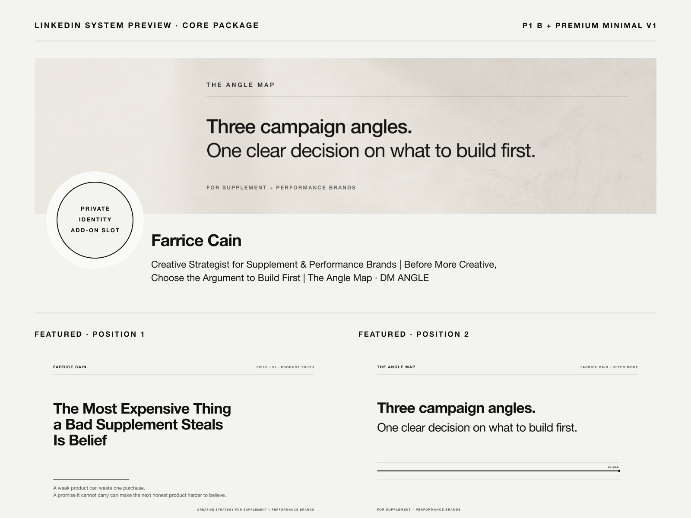
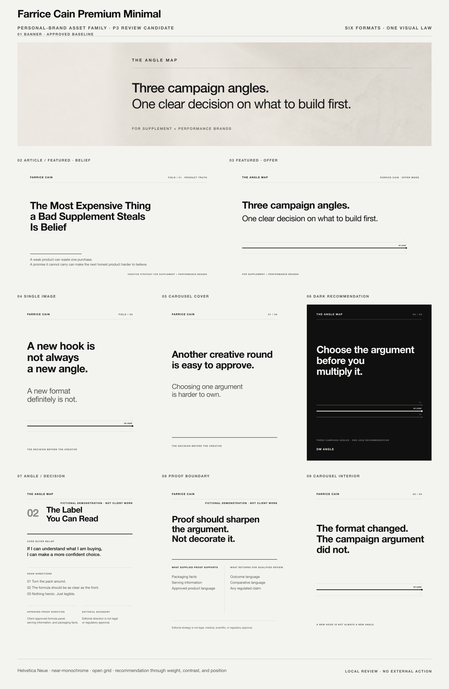
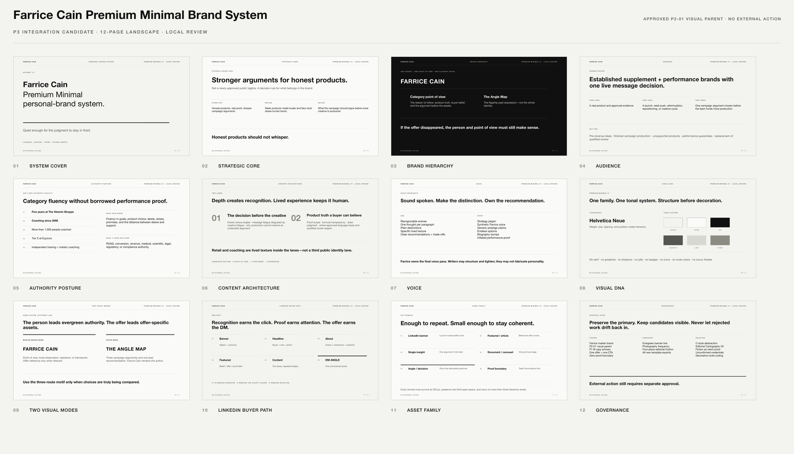

Farrice Cain is the durable master brand.
The identity survives any one offer. Lived experience and judgment belong to the person.
Judge the family as a whole before promoting any new asset from review to approved.
The identity survives any one offer. Lived experience and judgment belong to the person.
It is the clearest commercial application of the point of view—not a replacement for Farrice.
The current Angle Map banner is approved. Its permanent profile role is deliberately still open.

An internal strategic idea—not a newly approved public tagline. The public brand earns authority through clear distinctions, lived texture, and bounded claims.
| Level | Job | Rule |
|---|---|---|
| Farrice Cain | Durable trust container | Name, lived experience, judgment, and point of view survive every individual offer. |
| Category point of view | Reason to follow | Honest products, real proof, and the campaign argument before more creative. |
| The Angle Map | Flagship paid expression | One concrete way Farrice applies the point of view to a live message decision. |
| Decision Book and cards | Functional deliverable parts | Never separate brands, logos, or public offers. |
Evergreen authority, category observations, product truth, lived experience, and future offers.
Three campaign arguments, one recommendation, and the decision the team should build first.
The top fold is an identity and relevance gate. The About and Experience sections carry the full offer mechanics, price, delivery clock, authority, and boundaries.
Banner and headline name the buyer, object, output, decision, and next action.
The flagship article establishes Farrice's standard for product truth and buyer belief.
The launch post and profile explain three angles, pre-review, the live session, and delivery.
One commercial invitation only: DM ANGLE. No competing offer or CTA.
Hooks versus angles, message fatigue disguised as creative fatigue, and the argument the team has not chosen.
Proof scope, claim boundaries, and why an honest formula can disappear inside generic category language.
Every asset uses Helvetica Neue, near-monochrome color, an open grid, thin rules, and recommendation through weight and position—not bright color or decorative chrome.

Belief-led Featured position one.
Commercial Featured position two.
One sharp argument in the feed.
Four-page demonstration; edit the four SVG page sources.
Shows the actual Angle Map grammar.
Teaches evidence use without implying approval.
This guide is a practical brand control surface: strategic core, hierarchy, audience, authority, content, voice, visuals, LinkedIn path, assets, and governance.

Best format for judgment and sharing locally.
Editable master for later approved refinements.
Strategic and verbal source of truth.
Approval is explicit and state-based. Production readiness does not silently become permission to publish, upload, edit a profile, or make a performance claim.
Farrice master brand, P1 B copy, P2-01 visual parent, DM ANGLE, and zero-proof authority boundary.
Evergreen banner line, portrait frequency, four-piece editorial rhythm, and all new template exports.
Hero C, synthetic Farrice voice, serif-led visual system, decorative route coding, prestige theater, and invented proof.
| Gate | Required before external use |
|---|---|
| Taste approval | Farrice approves the exact copy and visual asset—not merely the parent system. |
| Offer operations | Payment rail, session capacity, make-right language, confidentiality, and 48-hour clock are operational. |
| Claim safety | No unconfirmed credentials, invented proof, client-result language, legal approval, or performance implication. |
| Action approval | Profile edits, publication, Featured changes, outreach, DMs, and uploads each require separate authorization. |
Buyer path, lanes, Featured, CTA, and platform gates.
Tokens, grids, layout grammar, and QA.
States, formats, exports, intended use, and alt text.
{kind=link}
{kind=link}
{kind=link}
{kind=link}
{kind=link}